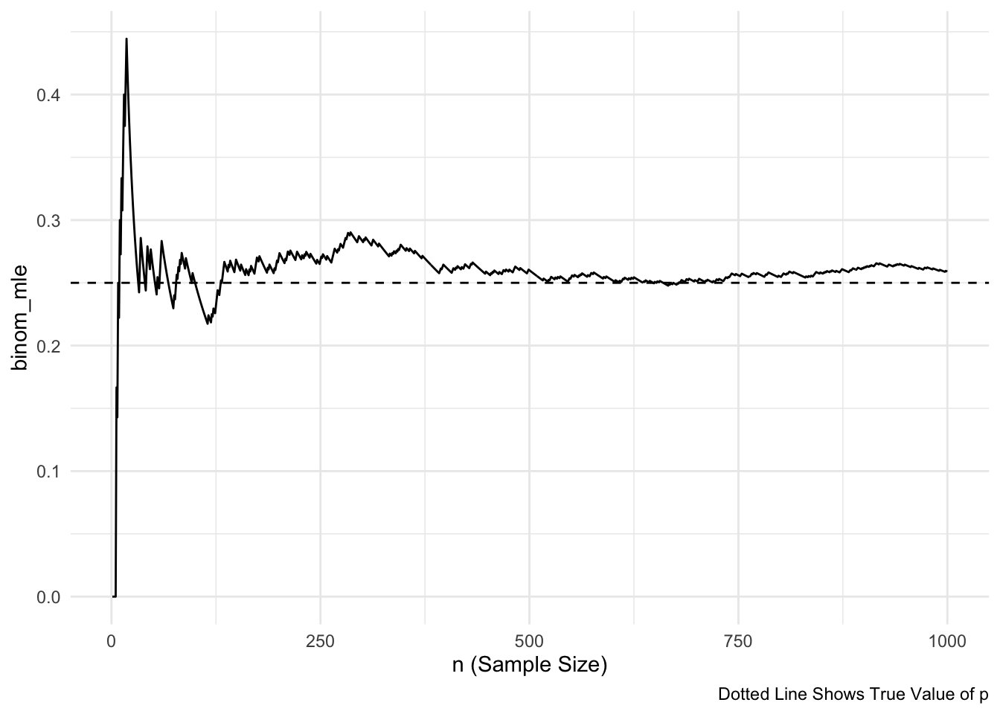

library(tidyverse)
## get binomial likelihood for each value of p
## p is a vector of probabilities
## n is a single value for the sample size
## dat is a vector of data
get_binom_lik <- function(p, n, data_vec) {
## for each value of p, map through the dbinom function for
## each data point (and multiply the results at the end to obtain
## the likelihood)
binom_lik <- map_dbl(p,
~ dbinom(x = data_vec, size = n, prob = .x) |>
prod() ## like the capital Pi in formula
)
## the function returns a vector of likelihoods for each
## candidate p (and will be a vector of the same length as p)
return(binom_lik)
}2 Estimation
Goals:
Explore how a likelihood function for a parameter changes for different data.
Convince yourself that maximizing the likelihood and maximizing the log-likelihood will give you the same estimate of \(\theta\).
Lab 2.1: Maximum Likelihood Estimation
In this subsection, we make a few plots of various likelihoods we have encountered so far. Note that the likelihood plot will change for different data, and, if you would like, you can put in different data vectors to see how the likelihood changes.
MLE Example: Binomial Likelihood
The code below examines the likelihood of \(p\) in a binomial setting with known \(n\). The peak shown in the plot gives the value of \(p\) that maximizes this likelihood.
Secondly, let’s graph the likelihood and the log-likelihood to try and convince ourselves that maximizing the log-likelihood is an equivalent approach to maximizing the likelihood:
get_binom_log_lik <- function(p, n, data_vec) {
## for each value of p, map through the dbinom function for
## each data point (and multiply the results at the end to obtain
## the likelihood)
binom_log_lik <- map_dbl(p,
~ dbinom(x = data_vec, size = n, prob = .x,
log = TRUE) |>
sum() ## like the summation in formula
)
## the function returns a vector of likelihoods for each
## candidate p (and will be a vector of the same length as p)
return(binom_log_lik)
}p <- seq(0.01, 0.5, by = 0.001)
n <- 20
dat <- c(5, 4, 2, 1, 0, 1, 2)
binom_liks <- get_binom_lik(p = p, n = n, data_vec = dat)
binom_log_liks <- get_binom_log_lik(p = p, n = n, data_vec = dat)
lik_df <- tibble(p, binom_liks, binom_log_liks) |>
pivot_longer(2:3, names_to = "lik_type", values_to = "L")
ggplot(data = lik_df, aes(x = p, y = L)) +
geom_line() +
facet_wrap(~ lik_type, scales = "free_y", nrow = 2) +
labs(y = "Likelihood") +
theme_minimal()Exercise. Both the likelihood and the log likelihood plots given above are plots of the likelihood of \(p\) given our observed data \(5, 4, 2, 1, 0, 1, 2\). Suppose that, instead of the data given above, we actually observed the following data: \(10, 9, 7, 6, 5, 6, 7\). How do you think the likelihood and log-likelihood plots would change given this new data? Draw a sketch of a possible likelihood and log-likelihood given this new observed data over the current plot.
Exercise. Use your knowledge from calculus as well as the plots given to explain why we can find the MLE by taking the derivative of the likelihood and setting the resulting equation equal to 0.
Exercise. We mentioned in class that instead of taking the derivative of the likelihood, it’s easier to take the derivative of the log-likelihood. Explain why employing this strategy still yields the MLE using the plots above.
MLE Example: Rayleigh Distribution
In class, we derived the MLE for the parameter \(\theta\) in the probability model:
\[ f(x \vert \theta) = \frac{2x}{\theta} e^{-\frac{x^2}{\theta}}, \]
Here, we graph that likelihood for a sample of \(n = 10\) data points.
thetas <- seq(0, 30, length.out = 1000) ## may need to adjust these limits
dat <- c(0.9, 1.5, 2, 4.2, 1.2, 5.2, 6.7, 2.1, 1.5, 2.3)
get_theta_lik <- function(theta, data_vec) {
## since there is no "dbinom" equivalent for the unnamed probability model
## we have to code f(x \vert \theta) "by hand":
theta_lik <- map_dbl(theta,
~ ((2 * data_vec / .x) * exp(-data_vec^2 / .x)) |>
prod()
)
return(theta_lik)
}
theta_liks <- get_theta_lik(theta = thetas, data_vec = dat)
lik_df <- tibble(thetas, theta_liks)
ggplot(data = lik_df, aes(x = thetas, y = theta_liks)) +
geom_line() +
labs(y = "Likelihood") +
theme_minimal()MLE Example: Poisson
Consider the likelihood of various values of \(\lambda\), where the random sample of data is from a Poisson probability model.
dat <- c(8, 0, 4, 9, 1)
lambdas <- seq(0, 10, length.out = 1000) ## may need to adjust these limits
get_poisson_lik <- function(lambda, data_vec) {
poisson_lik <- map_dbl(lambda,
~ dpois(x = data_vec, lambda = .x) |>
prod()
)
return(poisson_lik)
}
poisson_liks <- get_poisson_lik(lambda = lambdas, data_vec = dat)
lik_df <- tibble(lambdas, poisson_liks)
ggplot(data = lik_df, aes(x = lambdas, y = poisson_liks)) +
geom_line() +
labs(y = "Likelihood") +
theme_minimal()Exercise. Many of the most common likelihood functions are unimodal with a single peak (so, there is a single MLE). Draw a sketch of a likelihood function such that using our strategy of finding the MLE (taking the derivative and setting equal to 0) would fail.
Exercise. Many of the most common likelihood functions are unimodal with a single peak (so, there is a single MLE). Draw another sketch of a likelihood function such that using our strategy of finding the MLE (taking the derivative and setting equal to 0) would fail.
Lab 2.2 MLEs in Practice
Most of the estimators that you have seen in other STAT courses are MLEs, including the estimators for slope coefficients in linear regression models. While it is harder to derive these “by hand” due to the amount of algebra, let’s look at some code that computes the likelihood of the simple linear regression model: \(Y_i = \beta_0 + \beta_1x_i + \epsilon_i\), where \(\epsilon_i \sim N(0, \sigma^2)\) and are each independent.
Exercise. In simple linear regression, \(\beta_0\), \(\beta_1\) and \(x_i\) are all considered to be “constants.” Using rules of expectation and variance, find the expectation and variance of \(Y_i\). Additionally, what is the distribution of \(Y_i\) (we proved this back in Probability: see if you can remember!).
Exercise. Write out the likelihood for \(\beta_0\), \(\beta_1\), and \(\sigma\) given our observed data \(y_i\) and \(x_i\).
Exercise. If we were to find our estimators by hand, how many derivatives of the likelihood would we need to take?
Suppose that we want to fit a linear regression model using the number of graduating majors from our department as the response variable and year as the predictor variable from 2002 through 2022. The data has been put into a tibble and has been plotted below:
year <- 2:22
mcss_majors <- c(15, 27, 30, 29, 45, 38, 35, 39, 49, 25, 40, 38, 53, 38, 52, 62, 37, 72, 65, 50, 55)
mcss_df <- tibble(year, mcss_majors)
ggplot(data = mcss_df, aes(x = year, y = mcss_majors)) +
geom_point() +
theme_minimal()The following is some code that I modified from ChatGPT to compute the likelihood for values of \(\beta_0\), \(\beta_1\), \(\sigma^2\) and a given vector of a predictor variable x and a vector of a response variable y.
# Function to compute the likelihood for simple linear regression
compute_likelihood <- function(intercept, slope, sigma, x, y) {
# Number of observations
n <- length(y)
# Compute predicted values
y_pred <- intercept + slope * x
# Compute residuals
residuals <- y - y_pred
# Compute the likelihood
likelihood <- (1 / (sqrt(2 * pi) * sigma)^n) *
exp(-sum(residuals^2) / (2 * sigma^2))
return(likelihood)
}
# Compute likelihood once
compute_likelihood(intercept = 20, slope = 2, sigma = 7,
x = mcss_df |> pull(year),
y = mcss_df |> pull(mcss_majors))[1] 1.134363e-34And then this is my own code (ChatGPT failed or I misused it somehow) to loop through the compute_likelihood() function to compute the likelihood for a grid of possible values for \(\beta_0\), \(\beta_1\), and \(\sigma\).
## set up grid of possible values
intercept <- seq(20, 23, length.out = 50)
slope <- seq(1.6, 1.9, length.out = 50)
sigma <- seq(8.5, 9.5, length.out = 50)
grid <- expand_grid(intercept, slope, sigma)
liks <- pmap_dbl(grid, ~ compute_likelihood(..1, ..2, ..3,
x = mcss_df |> pull(year),
y = mcss_df |> pull(mcss_majors)))
likelihood_df <- grid |> mutate(likelihood = liks)
likelihood_df# A tibble: 125,000 × 4
intercept slope sigma likelihood
<dbl> <dbl> <dbl> <dbl>
1 20 1.6 8.5 2.03e-34
2 20 1.6 8.52 2.06e-34
3 20 1.6 8.54 2.08e-34
4 20 1.6 8.56 2.11e-34
5 20 1.6 8.58 2.14e-34
6 20 1.6 8.60 2.16e-34
7 20 1.6 8.62 2.19e-34
8 20 1.6 8.64 2.21e-34
9 20 1.6 8.66 2.24e-34
10 20 1.6 8.68 2.26e-34
# ℹ 124,990 more rowsggplot(data = likelihood_df, aes(x = intercept, y = slope)) +
geom_tile(aes(fill = likelihood)) +
scale_fill_viridis_c() +
theme_minimal()Exercise. Write a short summary of what the above code is doing. What is represented in a single row of likelihood_df?
Exercise. Based on the plot of the likelihood of the various slope and intercept combinations, what does it look like the approximate maximum likelihood estimates are?
Exercise. Run the following code to find the row in the grid that has the maximum likelihood.
# A tibble: 1 × 4
intercept slope sigma likelihood
<dbl> <dbl> <dbl> <dbl>
1 21.6 1.75 8.93 1.25e-33Based on our grid search, what are the maximum likelihood estimates for \(\beta_0\), \(\beta_1\) and \(\sigma\) in this example?
Exercise. Now, fit the linear regression model using lm():
Call:
lm(formula = mcss_majors ~ year, data = mcss_df)
Residuals:
Min 1Q Median 3Q Max
-16.060 -6.319 0.161 6.933 17.192
Coefficients:
Estimate Std. Error t value Pr(>|t|)
(Intercept) 21.5948 4.5443 4.752 0.000139 ***
year 1.7481 0.3381 5.170 5.44e-05 ***
---
Signif. codes: 0 '***' 0.001 '**' 0.01 '*' 0.05 '.' 0.1 ' ' 1
Residual standard error: 9.382 on 19 degrees of freedom
Multiple R-squared: 0.5845, Adjusted R-squared: 0.5627
F-statistic: 26.73 on 1 and 19 DF, p-value: 5.441e-05Locate the estimates for \(\beta_0\), \(\beta_1\) and \(\sigma\) in the output. Do all of these estimates match what we found with our grid search to find the estimates that give the maximum likelihood?
Lab 2.3: MSE Consistency
In this subsection, we illustrate an example visualizing some of the mean square error results we derived in class as well as a couple of consistent estimators.
MSE Graph
Here, we again the example where \(X_1, X_2, \ldots, X_n\) are independent and identically distributed random variables with a \(\text{Unif}(0, \theta)\) distribution. We now have three estimators: \(\hat{\theta}_{MOM}\), \(\hat{\theta}_{MLE}\), and \(\hat{\theta}^*\). We have already derived both the MLE, the MOM estimator, and adjusted the MLE to make a new, unbiased estimator based on the MLE. We also calculated the MSE of each of our three candidate estimators.
Now, we make a plot of the MSE for \(1 \leq n \leq 20\).
library(tidyverse)
n <- 1:20
theta <- 1
mse_mom <- (1 / (3 * n)) * theta^2
mse_mle <- (2 / ((n + 1) * (n + 2))) * theta^2
mse_mle_unb <- (1 / ((n * (n + 2)))) * theta^2
mse_plot <- tibble::tibble(n, mse_mom, mse_mle, mse_mle_unb) |>
pivot_longer(2:4, names_to = "estimator", values_to = "mse")
ggplot(data = mse_plot, aes(x = n, y = mse)) +
geom_line(aes(colour = estimator)) +
theme_minimal() +
scale_colour_viridis_d()Exercise. How do these results match your theoretical calculations? Which of the three estimators seems most preferable?
Exercise. Consider two generic estimators for a parameter \(\theta\), and denote these estimators \(\hat{\theta}_1\) and \(\hat{\theta}_2\). Draw a plot similar to the plot given above (\(n\) on x-axis, MSE on y-axis) that shows that \(\hat{\theta}_1\) is preferable at some sample sizes but \(\hat{\theta}_2\) is preferable for other sample sizes.
Binomial Example Consistency
library(tidyverse)
p <- 1 / 4 ## specify probability of success for the simulation
nsim <- 1000 ## specify range of possible ns (how long we will run the simulation)
compute_binom_estimator <- function(p, nsim) {
## draw nsim different of 0's and 1's
bernoulli_draws <- rbinom(n = nsim, size = 1, prob = p)
## compute the estimator of p
## nsim different times (once using a sample of 1 bernoulli, then
## using a sample of 2 bernoullis, ....,
## then using a sample of nsim bernoullis)
binom_mle <- map_dbl(1:nsim, ~ sum(bernoulli_draws[1:.x]) / .x)
## put all three results into a data frame, along with n
output_df <- tibble(n = 1:nsim, binom_mle)
return(output_df)
}
plot_df <- compute_binom_estimator(p = p, nsim = nsim)
ggplot(data = plot_df, aes(x = n,
y = binom_mle)) +
geom_line() +
geom_hline(yintercept = p, linetype = 2) +
theme_minimal() +
labs(x = "n (Sample Size)",
caption = "Dotted Line Shows True Value of p")
Exercise. On the plot above, sketch in an estimator that does not exhibit evidence of consistency because the estimator does not seem to be asymptotically unbiased.
Exercise. In the provided lab code, change nsim to be equal to 50. Does the MLE look like it converges to the true value of \(p\)? Explain why the resulting plot is not enough to confirm whether or not the estimator is consistent for \(p\).
Uniform Example Consistency
theta <- 10 ## specify an upper bound for our uniform model
## recall that the lower bound is known and is equal to 0
nsim <- 1000 ## specify range of possible sample sizes (how long we will run the simulation)
## compute each estimator of theta using adjusted MLE, MLE, and MOM
compute_unif_estimators <- function(theta, nsim) {
unif_draws <- runif(n = nsim, min = 0, max = theta)
## compute the method of moment estimator
## nsim different times (once using a sample of size 1, then
## using a sample of size 2, ...., then using a sample of size nsim)
unif_mom <- map_dbl(1:nsim, ~ 2 * mean(unif_draws[1:.x]))
## same type of computation for MLE
unif_mle <- map_dbl(1:nsim, ~ max(unif_draws[1:.x]))
## same type of computation for adjusted MLE
unif_mle_adj <- map_dbl(1:nsim,
~ ((.x + 1) / .x) * max(unif_draws[1:.x]))
## put all three results into a data frame, along with n
output_df <- tibble(n = 1:nsim,
unif_mom, unif_mle, unif_mle_adj)
return(output_df)
}
plot_df <- compute_unif_estimators(theta = theta, nsim = nsim)## do some DATA/STAT 234-type Work to make the plot
plot_long <- plot_df |> pivot_longer(cols = starts_with("unif"),
names_to = "Estimator",
values_to = "theta_estimate")
ggplot(data = plot_long, aes(x = n,
y = theta_estimate,
colour = Estimator)) +
geom_line() +
geom_hline(yintercept = theta, linetype = 2) +
scale_colour_viridis_d(end = 0.9) +
theme_minimal() +
labs(x = "n (Sample Size)",
caption = "Dotted Line Shows True Value of Theta")Exercise. On the plot above, sketch in an estimator that does not exhibit evidence of consistency because the estimator’s asymptotic variance does not seem to go to 0.
Mini Project 2: A Meaningful Story
AI Usage: You may not use generative AI for this project in any way.
Collaboration: For this project, you may not work with other people in the class. Your story must be your own.
Statement of Integrity: Your submission should be typed. At the top of your submission, copy and paste the following statement and type your name, certifying that you have followed all AI and collaboration rules for this mini-project.
“All work presented is my own, and I have followed all rules for collaboration. I have not used generative AI on this project.”
For this mini-project, you will write a “meaningful story.” A “meaningful story” is one continuous piece of writing / creative work that uses key words from a list and in which the sentences “make sense and hang together.” That is, the ideas in the story must illustrate that you understand key concepts from Stat 326 in a way that allows you to write “meaningfully” about them. You may not simply write ten sequential sentences that merely define the terms; the sentences must demonstrate relationships between the terms. It is your job to use the terms in a way that demonstrates that you understand the statistical concepts involved and why we care about these terms in the big picture of statistical theory.
In addition, you need to frame your writing within a real-life or imaginary context or scenario. Be creative!! Write about sports or music or manufacturing cell phones or skiing trips or the zombie apocalypse. Meaningful stories could even be literary works, such as play scripts, stories, song lyrics, poetry, etc. Use your imagination when constructing your “story” and conveying the material (content MUST be appropriate).
Estimation Prompt: Each of these terms must be incorporated into your meaningful story. Estimator, Parameter, Estimate (as a noun), Random Variable, Random Sample, Bias, Variance, Consistent, Likelihood.
Also: in your “meaningful story,” you must refer to at least one of our common probability distributions by name.